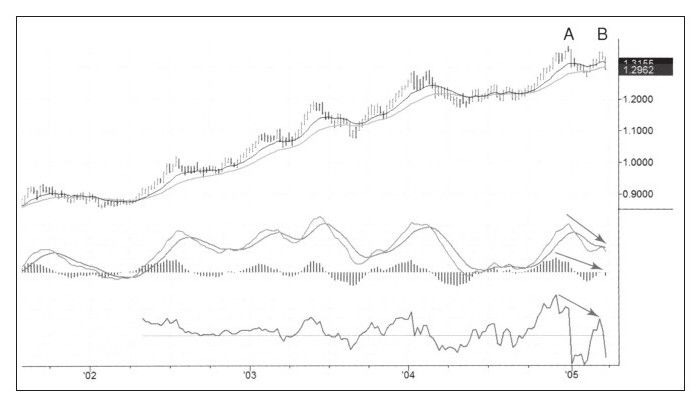
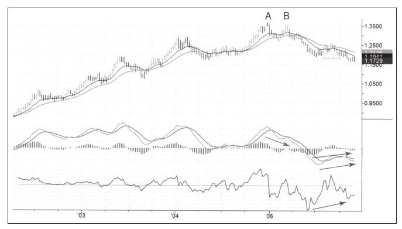

本章以推荐书目开始，但在本节我却说不出好的书来。没有一本关于外汇交易的书籍能让我信心十足地推荐给你，并说“这是本好书，读吧”。所以你要从汗牛充栋的外汇书籍中自己寻找了。
外汇市场有几个明显的交易时段，选择的交易时段与获胜的机会息息相关。外汇市场上的投资者结构让我想起了在第三世界国家的一次课程，那里的富人很少，很多无知的穷人不喜欢经历震荡，往往捡了芝麻丢了西瓜。
大资金在银行间市场交易，这个市场上的交易员每次交易的规模以千万美元计。中等规模的资金在外汇期货市场上，这些资金会面临开盘跳空缺口的威胁，因为外汇交易几乎24小时都在进行但外汇期货却并非如此。金字塔的最低端是在外汇商号里的普通大众的小交易账户。
赌徒、失败者和缺乏资金的新手总是在寻找一夜暴富的机会。几年前他们在股票交易所从事散股交易，之后又转战期权市场，在输个精光后，幸存者又把资金投向外汇市场。
外汇交易的问题是，大多数外汇商号都是投机商号，当你发出买卖指令后，他们会给你所谓的成交回报，事实上，没有形成真实的交易，只有入场交易备案。无论你交易哪个方向，这些商号都与你的交易方向相反，信息不对称导致交易对客户非常不利。他们用多种方法让那些过分乐观的做梦者毁灭得更快。
外汇商号提供疯狂的保证金比例，最高可以达到400：1。要知道，股票市场上交易者需要付出50%的保证金，即便期货市场上也要5%。但外汇市场上0.2%的保证金比例使得所有的资金管理策略都变得没有意义。
除了买卖价差外，外汇商号还拿走你资金的利息，给你的只有并不存在的“仓位”，而你有的只是入场备案，因为你的指令哪都没去。当你交易交叉汇率并做多时，商号将付给你少于多头货币交易的利息，如果你做空，他们却收取多于空头货币交易的利息。
当你买卖股票时，经纪商通常不关注你是否赚钱，他们只执行交易指令并收取佣金。但大多数外汇经纪公司，他们并非把客户的交易单抛向市场，而是充当客户的对手角色。交易者每次交易的交易对手都是这些商号，这意味着如果交易者赚钱，商号就亏钱。这是一个有严重缺陷的系统，这种恶劣的系统曾在股票市场上出现过，但一个世纪以前就消失了，而今天却还在外汇市场上运行着。
外汇商号所有者知道客户最终都会因缺乏交易技巧和资金实力薄弱而死亡，那么为什么还要把交易单抛向市场和别人分享这份利润呢？
价差、佣金以及客户资金所产生的利息给赌徒的棺材钉上了钉子。
明智的商号的操盘手会监控客户的总仓位，当客户净持仓在某一方向（无论多空）过大时，比如100万美元，他们就把这部分风险转向银行间市场。有些商号却越走远远，当客户净持仓过大时，他们反而与客户对赌。
那些让交易生效的真正诚实的商号，在与投机商号竞争时面临严重的劣势，投机商号通常会与诚实的商号低价竞争，因为他们不需要支付交易执行成本。我相信有正派的运行良好的商号存在，但是它们运行起来将阻力重重。
全世界范围内的政府都没能整顿好外汇市场。我希望未来有使用网络技术的私人企业家为中小外汇交易者创造更好的交易平台。在一个透明的系统出现之前，我只有一个词送给你：小心谨慎！
如果没有在银行间市场交易大资金，也不想在外汇投机商号内交易，你只有一个选择，那就是交易外汇期货。外汇期货交易始于20世纪70年代的芝加哥商品交易所，当然，现在外汇期货已经在全球范围内的很多国家展开。更重要的是，外汇期货是电子化交易，这使它成为信誉卓著和更加透明的交易品种。
为什么还是有那么多人在外汇投机商号内交易？因为外汇期货的每次交易可能要花好几千美元，但在外汇投机商号，开户可能只需要50美元，并给你100：1的保证金比例，这意味着你可以交易价值5 000美元的外汇头寸。当然，除了从投机商号收到所谓的成交回报外，你还要支付5 000美元所产生的利息，其他的你将一无所获。
毋庸赘言，在交易外汇期货之前你必须明白如何交易期货，这方面有很多书籍，我先前已经列出了我喜欢的那些书籍。我此时的目的并非告诉你做空外汇和做空股票的区别，而是告诉你如何做空外汇。
做空外汇是个相对的过程，因为如果买入一种货币，就自动做空对应的货币。外汇市场是个做多和做空相匹配的市场，做多做空犹如硬币的正反两面。
所有交易都以货币衡量，这取决于你居住的地方、所使用的货币是美元、英镑或日元，等等。如果交易账户中是美元，买入欧元，相当于做多欧元，也就相当于自动做空美元。如果使用这个美元账户做空瑞郎，就自动做多了美元。
外汇交易者交易所谓的“交叉货币对”时可以不使用本币，比如，欧元/澳元意味着做多欧元做空澳元。瑞郎/日元意味着做多瑞郎做空日元。所有的外汇交易都是价差交易，当买入某种外汇时就自动做空另一种外汇。
多项研究表明，外汇市场是全球范围内趋势特征最明显的市场（见图8-9和图8-10）。一旦某个货币进入主趋势，无论涨跌，都可能持续好几年。因为长期来看，一国的货币价值与政府的政策紧密相关，当新政府是强势政府并开始实施经济刺激政策时，该国货币往往开始长期走强。当然，没有那种直线上涨或直线下跌的趋势。从短期和中期来看，趋势中有很多回调，这些回调由于次数众多、规模较大，因此提供了短期交易机会。


要注意，在股票市场上的某种交易方式在外汇市场上可能不再那么有用。持仓从几日到几周不等的波段交易在外汇市场上更容易遭受双重打击的境遇。
外汇交易是24小时交易，使得交易变得更加困难，你以自己所在时区看的图表只是全天交易的一部分，大量交易发生在你睡觉或不能看行情的时候。睡觉时你可能很难赌赢还在交易的外汇走势。